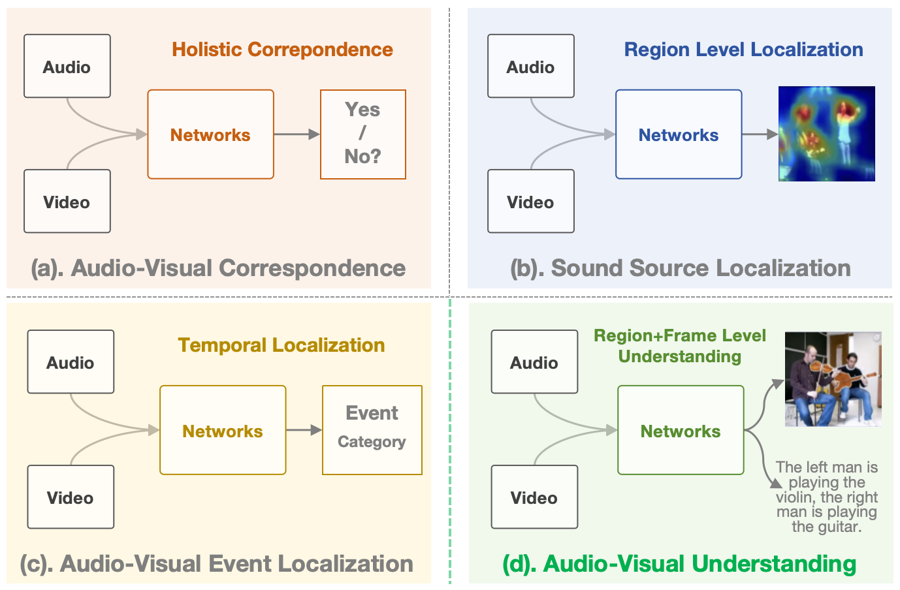
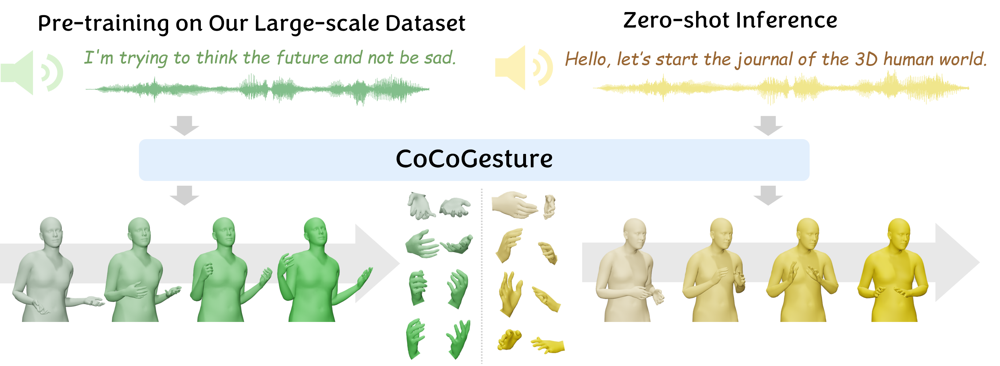
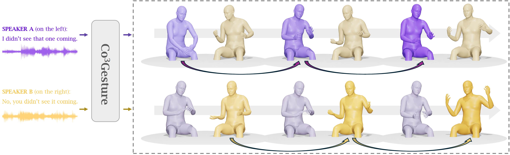
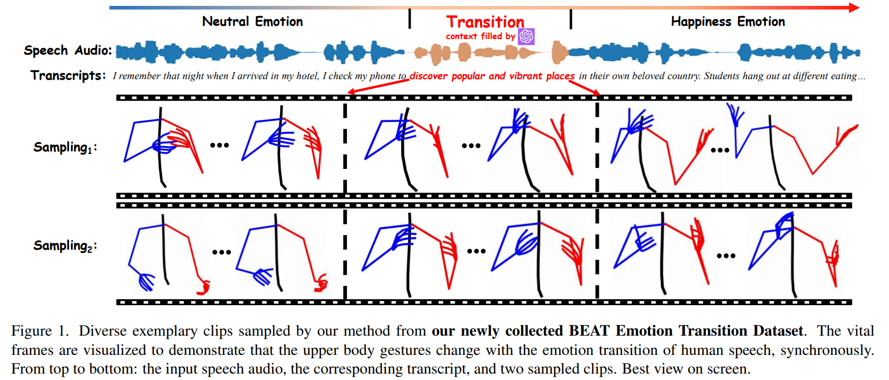
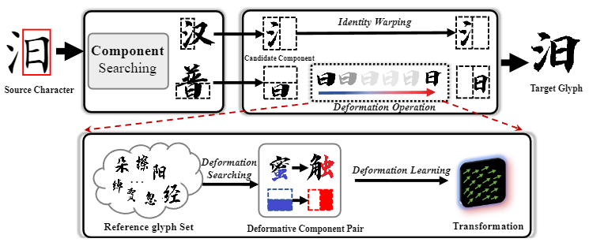
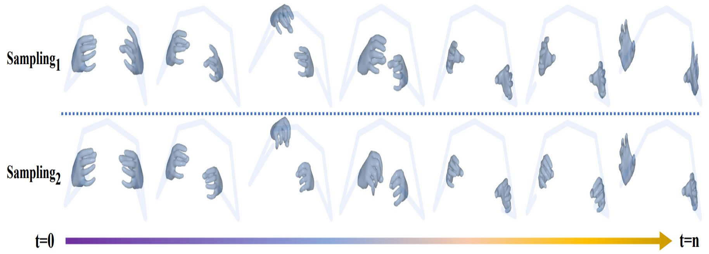

|
Xingqun Qi (祁星群)
PhD Candidate in Artificial Intelligence
Academy of Interdisciplinary Studies (AIS)
The Hong Kong University of Science and Technology (HKUST)
Research Interests: Human Motion Modeling, Medical Image Analysis, Biometrics
Email: xingqunqi dot gmail dot com
[Google Scholar]
|

|
Short Bio
I am a Ph.D. candidate at The Hong Kong University of Science and Technology (HKUST), supervised by Prof. Yike Guo and co-supervised by Prof. Qifeng Liu.
I received my Master's degree from the Beijing University of Posts and Telecommunications in June of 2022, supervised by Prof. Caifeng Shan and Dr. Muyi Sun. I received my Bachelor's degree from both the Beijing University of Posts and Telecommunications and the Queen Mary University of London.
My research focuses on 3D Human Motion Modeling and Medical Image Analysis.
Currently, I work closely with Prof. Wenhan Luo, Prof. Shanghang Zhang, and Dr. Muyi Sun.
Moreover, I collaborate closely with Prof. Xin Yu, and Chen Liu during my gap year from June 2022 to May 2023 (waiting for visa). Very fortunate to encounter these great collaborators.
News
-
[2025-01] One paper accepted by ICLR 2025 (Spotlight).
-
[2024-05] One paper accepted by IEEE TMM.
-
[2024-03] One paper accepted by IEEE JBHI.
-
[2024-03] One paper accepted to CVPR 2024.
-
[2023-12] One paper accepted to IEEE TNNLS.
-
[2023-10] One paper accepted to IEEE TMM.
-
[2023-03] One paper accepted to CVPR 2023.
Preprints
(* denotes equal contribution; # denotes corresponding author)

Audio-Visual Understanding: Towards Fine-Grained Audio-Visual Learning with Region-Aware Sound Source Understanding
Muyi Sun, Hong Wang, Chen Su, Yixuan Wang, Song Wang, Man Zhang, Xingqun Qi#, Qi Li, Zhenan Sun

CoCoGesture: Toward Coherent Co-speech 3D Gesture Generation in the Wild
Xingqun Qi*, Hengyuan Zhang*, Yatian Wang, Jiahao Pan, Chen Liu, Peng Li, Xiaowei Chi, Mengfei Li, Wei Xue, Shanghang Zhang, Wenhan Luo, Qifeng Liu, Yike Guo
[
Paper][
Project Page]
Publications
(* denotes equal contribution; # denotes corresponding author)
2025

Co3Gesture: Towards Coherent Concurrent Co-speech 3D Gesture Generation with Interactive Diffusion
Xingqun Qi*, Yatian Wang*, Hengyuan Zhang, Jiahao Pan, Wei Xue, Shanghang Zhang, Wenhan Luo, Qifeng Liu, Yike Guo
The International Conference on Learning Representations (ICLR
Spotlight) 2025.
[
Paper][
Project Page]
2024
Emotiongesture: Audio-driven diverse emotional co-speech 3d gesture generation
Xingqun Qi*, Chen Liu*, Lincheng Li, Jie Hou, Haoran Xin, Xin Yu
IEEE Transactions on Multimedia (IEEE TMM) 2024.
[
Paper][
Project Page]
Exploring Generalizable Distillation for Efficient Medical Image Segmentation
Xingqun Qi, Zhuojie Wu, Wenxuan Zou, Min Ren, Yifan Gao, Muyi Sun, Shanghang Zhang, Caifeng Shan, Zhenan Sun
IEEE Journal of Biomedical and Health Informatics (IEEE JBHI) 2024.
[
Paper][
Project Page]

Weakly-Supervised Emotion Transition Learning for Diverse 3D Co-speech Gesture Generation
Xingqun Qi, Jiahan Pan, Peng Li, Ruibin Yuan, Xiaowei Chi, Mengfei Li, Wenhan Luo, Wei Xue, Shanghang Zhang, Qifeng Liu, Yike Guo
IEEE/CVF Computer Vision and Pattern Recognition (IEEE/CVF CVPR) 2024.
[
Paper][
Project Page]
2023
Biphasic face photo-sketch synthesis via semantic-driven generative adversarial network with graph representation learning
Xingqun Qi*, Muyi Sun*, Zijian Wang, Jiaming Liu, Qi Li, Fang Zhao, Shanghang Zhang, Caifeng Shan
IEEE Transactions on Neural Networks and Learning Systems (IEEE TNNLS) 2023.
[
Paper]

Calligraphy Font Generation via Explicitly Modeling Location-aware Glyph Component Deformations
Minda Zhao*,
Xingqun Qi*, Zhiping Hu, Lincheng Li, Yongqiang Zhang, Zi Huang, Xin Yu
IEEE Transactions on Multimedia (IEEE TMM) 2023.
[
Paper]
Audio-Visual Segmentation by Exploring Cross-Modal Mutual Semantics
Chen Liu, Peike Li,
Xingqun Qi, Hu Zhang, Lincheng Li, Dadong Wang, Xin Yu
ACM International Conference on Multimedia (ACM MM) 2023.
[
Paper]

Diverse 3D Hand Gesture Prediction from Body Dynamics by Bilateral Hand Disentanglement
Xingqun Qi, Chen Liu, Muyi Sun, Lingchen Li, Changjie Fan, Xin Yu
IEEE/CVF Computer Vision and Pattern Recognition (IEEE/CVF CVPR) 2023.
[
Paper]
2022
Graph flow: Cross-layer graph flow distillation for dual efficient medical image segmentation
Wenxuan Zou,
Xingqun Qi, Wanting Zhou, Muyi Sun, Zhenan Sun, Caifeng Shan
IEEE Transactions on Medical Imaging (IEEE TMI) 2022.
[
Paper]
Self-supervised correlation mining network for person image generation
Zijian Wang,
Xingqun Qi, Kun Yuan, Muyi Sun
IEEE/CVF Computer Vision and Pattern Recognition (IEEE/CVF CVPR) 2022.
[
Paper]
2021
Accurate Retinal Vessel Segmentation in Color Fundus images via Fully Attention-based Networks
Kaiqi Li*,
Xingqun Qi*, Yiwen Luo, Zeyi Yao, Xiaoguang Zhou, Muyi Sun
IEEE Journal of Biomedical and Health Informatics (IEEE JBHI) 2021.
[
Paper]
Competitions
Services
-
Conference Reviewer: CVPR, ICML, NeurIPS, ICLR, ACM MM, WACV, ACCV (outstanding reviewer in 2022)
-
Journal Reviewer: IJCV, TIFS, TNNLS, TMM, TOMM, JBHI, PR, TCBB